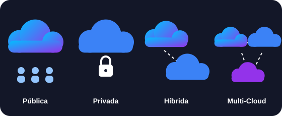

Pública, privada, híbrida… ¿cuál elegir?
El modelo de despliegue define quién es dueño de la infraestructura, quién la usa y qué tanto control tienes sobre ella.

Cinco formas de desplegar la nube
Dónde viven tus recursos importa tanto como qué servicio usas.
Nube pública
La infraestructura pertenece a un proveedor externo que la gestiona y la comparte entre múltiples clientes a través de Internet.
Nube privada
Recursos utilizados exclusivamente por una sola empresa u organización. Puede estar en su propio centro de datos o ser alojada por un tercero.
Nube híbrida
Combina infraestructura pública y privada, permitiendo compartir datos y aplicaciones entre ellas según las necesidades del negocio.
Multi-cloud
Uso de servicios de varios proveedores de nube pública (por ejemplo, AWS + Azure) para prevenir el bloqueo de proveedor y optimizar costos.
Nube comunitaria
Infraestructura compartida por varias organizaciones con intereses comunes, como universidades, gobiernos o instituciones de salud.
Comparación de modelos
| Modelo | Costo inicial | Control | Escalabilidad | Complejidad | Ideal para |
|---|---|---|---|---|---|
| Pública | Bajo | Menor | Muy alta | Baja | Startups, sitios web, pruebas y cargas variables |
| Privada | Alto | Máximo | Limitada a tu capacidad | Alta | Datos muy sensibles y normativas estrictas |
| Híbrida | Medio | Alto | Alta (usa la pública en los picos) | Alta | Empresas con sistemas propios que quieren flexibilidad |
| Multi-cloud | Variable | Repartido entre proveedores | Muy alta | Muy alta | Evitar dependencia y elegir lo mejor de cada proveedor |
| Comunitaria | Compartido | Medio | Media | Media | Organizaciones con necesidades similares |